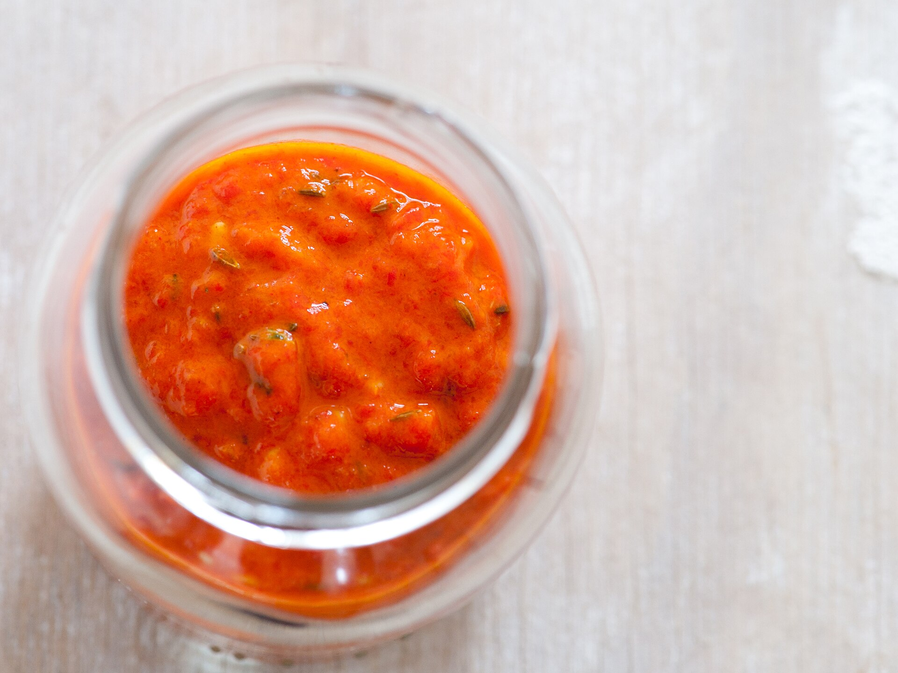
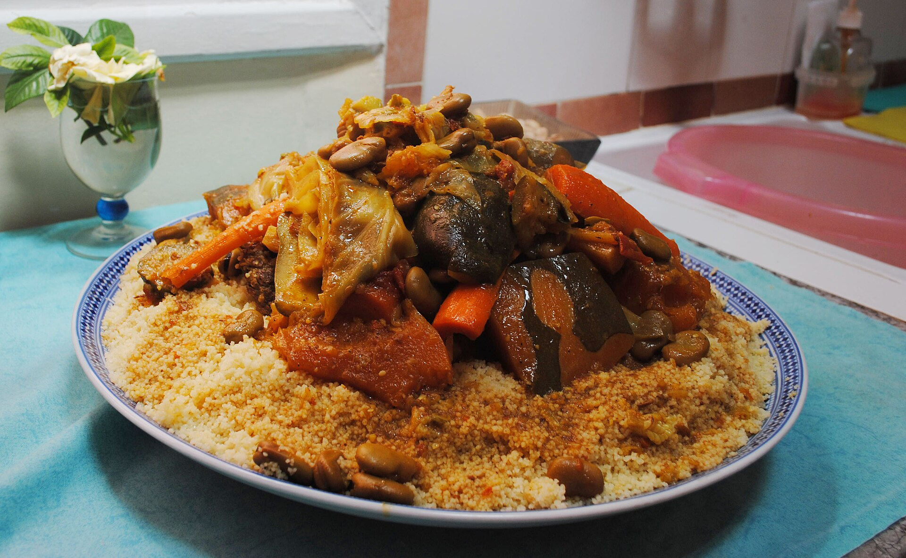
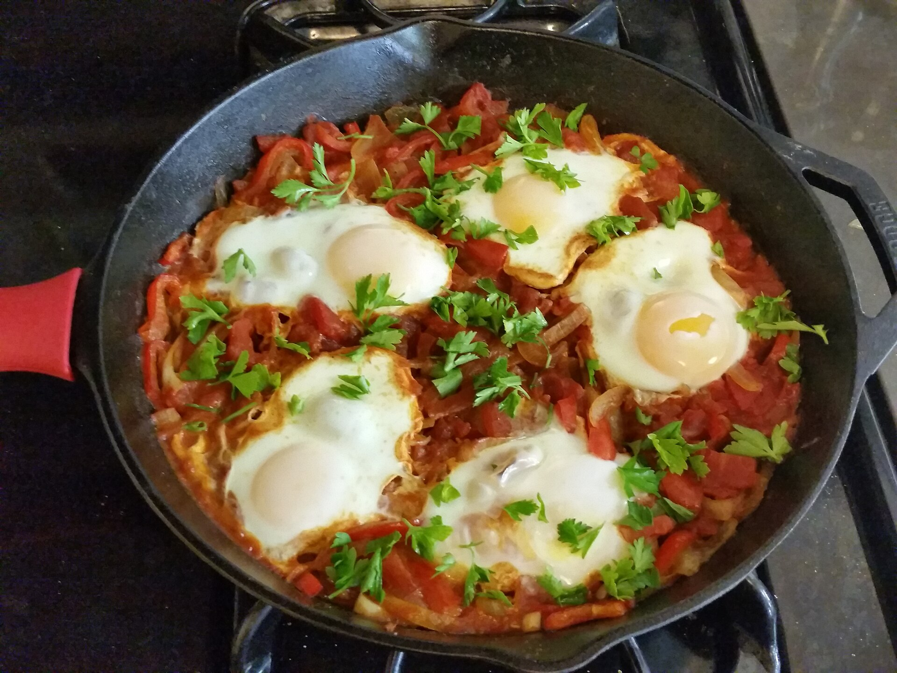

Ras el hanout
Means 'head of the shop' — a spice merchant's signature blend of up to 30 spices.
Aromatic and refined — where warm spices, dried fruit and slow cooking create a perfect sweet–savoury balance.
From the Atlas Mountains of Morocco to the Nile Delta, North African cooking sits at a crossroads of Amazigh (Berber), Arab, Andalusian, Ottoman and Mediterranean traditions. The food is aromatic rather than fiery: warm spices like cumin, cinnamon and precious saffron are layered with fruit, nuts and fresh herbs.
Hospitality is sacred. Guests are welcomed with sweet mint tea, Friday often means a mountain of couscous shared by the whole family, and squares like Marrakech's Jemaa el-Fnaa turn into open-air kitchens every evening.

Harissa: the fiery chilli paste of Tunisia.
The conical clay lid traps steam and drips it back onto the food, slow-braising meat until meltingly tender.
Semolina grains are steamed two or three times in a couscoussier above a simmering stew, absorbing its aroma.
Meat is cooked with dried fruit, honey and nuts — think lamb with prunes or chicken with apricots.
Lemons are salt-cured for weeks, and chillies are pounded into harissa to keep flavour all year round.
The aromatics that give North Africa its unmistakable taste.
Means 'head of the shop' — a spice merchant's signature blend of up to 30 spices.
Golden threads grown around Taliouine, Morocco, adding floral colour to tagines.
Warm and earthy — sprinkled on everything from grilled meat to boiled eggs.
A fiery Tunisian paste of chilli, garlic, caraway and coriander.
Used in savoury dishes like pastilla and lamb tagine, not just desserts.
Salt-cured lemon rind with an intense, mellow citrus flavour.
Cards marked Full recipe link to step-by-step instructions.
 North Africa
North Africa
Chicken slow-braised with saffron, preserved lemons and olives in a conical clay pot.

North AfricaSemolina steamed over a fragrant stew of vegetables and meat — the classic Friday feast.

North AfricaEggs gently poached in a spiced tomato and pepper sauce, made for sharing with bread.
Travel through Morocco's markets and street stalls — tagines, couscous, grilled meats and mint tea.
Continue your journey: